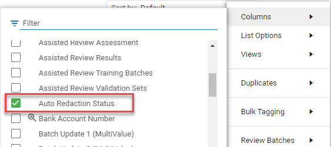
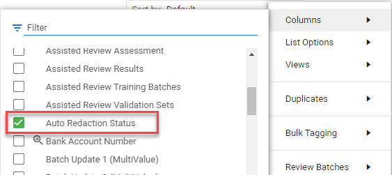

From the document list view, click on the settings button .
Select Columns and check the box for Auto Redaction Status.

You can now add keywords to quickly find the errors based upon the status.

Create Auto Redaction Rules to automatically locate and redact keywords, phrases, and personal information (names, social security numbers, credit card numbers, email addresses, and more).
The videos below are helpful examples:
You can quickly find auto redaction errors by adding the status field to your column view.
From the document list view, click on the settings button .
Select Columns and check the box for Auto Redaction Status.

You can now add keywords to quickly find the errors based upon the status.
You may receive an error indicating the auto redaction failed. There will be three options to resolve the problem.

Close button closes the message, leaving the failed state unchanged:
The message appears again next time this document is opened.
Production of the document produces the placeholder, not the document body.
If the document has some redactions applied already, ‘Contains redaction’ field is ‘Yes’.
If the document has no redactions apart from failed ones, ‘Contains redaction’ field is ‘No’.
Redact manually button accepts the current state of the document:
Error message doesn’t appear next time this document is opened.
Production of the document produces the document with the proper actually existing redactions.
If the document has some redactions applied already, ‘Contains redaction’ field is ‘Yes’, otherwise it’s ‘No’.
Retry button triggers the auto-redactions generation for that document:
Error message doesn’t appear next time this document is opened.
Auto-redactions are successfully generated and ‘Contains redaction’ field is ‘Yes’.
Production of the document produces the document with the proper actually existing redactions.
Retry action doesn’t affect the neighboring documents' (previous and next) redaction states.
The auto-redactions generation fails again - error message would appear again each time the document is opened.